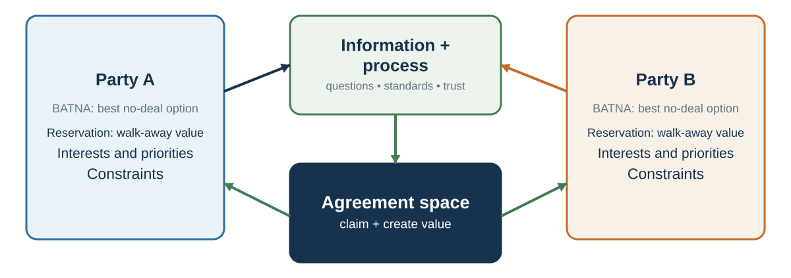

35 Negotiation as Joint Decision Design
Interdependence turns choice into a shared search
Learning goals
- Map a negotiation as parties, alternatives, positions, interests, issues, options, and implementation conditions.
- Distinguish value claiming from value creation while managing information deliberately.
- Produce a prepare–interact–implement plan for one joint decision.
A supplier says no
A manufacturer asks a long-standing supplier to accept a large order at the current unit price and deliver it before a fixed production date. The supplier refuses. The buyer hears, “You do not value the relationship.” The supplier means, “At that date and batch size, accepting would displace higher-margin work and expose us to a penalty we cannot control.”
If the buyer treats negotiation as winning, the next move is pressure. If both sides treat it as compromise, they may split the price difference and preserve an unworkable date. Joint decision design asks a different question: what package, if any, beats each party’s alternative after price, capacity, timing, risk, and implementation are considered?
The rational choice model asks how one decision-maker should choose among alternatives. Negotiation asks how multiple decision-makers can choose together when their outcomes depend on one another.
This makes negotiation different from ordinary individual choice. In individual choice, I compare options and choose. In negotiation, my best option depends on what you will accept, and your best option depends on what I will accept. My words change your beliefs. Your reactions change my strategy. My offer is both an option and a signal. Your silence may mean refusal, calculation, anger, respect, or uncertainty. Negotiation is strategic, social, and interpretive.
Negotiation also differs from pure strategic interaction because the parties communicate. In many games, players choose actions without discussion. In negotiation, communication is part of the process. Parties can ask questions, reveal information, make offers, explain constraints, frame standards, tell stories, signal priorities, build trust, threaten, promise, mislead, apologize, and repair.
Communication and persuasion therefore do different jobs. Communication helps the parties discover the agreement space; persuasion helps another person willingly accept a proposal. A frequent error is to start influencing before learning. Negotiation is an information game as well as an argument (Thompson et al., 2010).
That is why negotiation draws on many parts of this book. It requires rational analysis, because parties must know their alternatives and reservation values. It requires probability judgment, because parties estimate what the other side will accept. It requires valuation, because parties compare money, time, risk, status, fairness, relationship, and future opportunities. It requires social decision-making, because fairness, reciprocity, trust, face, and norms matter. It requires communication, because parties must understand one another well enough to identify possible agreements. It requires persuasion, because parties must help others see why an agreement is legitimate and valuable. It requires self-control, because emotions can derail the process.
Negotiation is therefore a capstone topic. It is where decision-making becomes interpersonal.
A useful way to understand negotiation is as a loop:
Information is exchanged. Each party interprets the other’s interests, constraints, intentions, and alternatives. Each party evaluates possible agreements. Offers and counteroffers are made. Reactions create feedback. Beliefs and expectations update. The parties either reach agreement, continue searching, or walk away.
This loop is often imperfect. Parties hide information. They misread each other. They anchor too strongly. They become defensive. They confuse positions with interests. They escalate commitment. They reject fair offers because of pride. They accept bad deals because of pressure. They leave value on the table because they fail to ask the right questions.
Good negotiation begins by making the structure visible.
1. Prepare the joint decision
Replace performance myths with design questions

Negotiation is often misunderstood. These misunderstandings lead to poor preparation and poor outcomes.
Negotiation is a joint decision process in which communication, alternatives, beliefs, preferences, and strategic interdependence jointly determine the agreement set (Raiffa, 1982; Lax & Sebenius, 1986; Thompson, 2015).
The familiar images—be tough, split the difference, talk persuasively, reach agreement—treat negotiation as performance. Each can fail. Toughness can destroy information; compromise can miss compatible differences; fluent talk can prevent learning; agreement can be worse than an alternative; and a signed deal can collapse in implementation. Preparation begins before the table with alternatives, stakeholders, standards, authority, and possible issues. Success is a workable agreement that improves on the parties’ alternatives, not applause for the negotiator.
A useful corrective is:
Do not ask only, “How do I get them to say yes?” Ask, “What agreement would make sense, compared with each party’s alternatives, and how can we discover whether such an agreement exists?”
| Myth | Hidden cost | Replacement question |
|---|---|---|
| “Good negotiators are tough.” | Toughness can destroy information and value. | What process protects interests and learning? |
| “Success means reaching agreement.” | A deal can be worse than the BATNA. | Is this agreement better than our best alternative? |
| “Compromise is the ideal.” | Splitting positions can miss compatible interests. | What do the parties value differently? |
| “Negotiation begins at the table.” | Alternatives, stakeholders, and standards are left undeveloped. | What can be improved before the conversation? |
| “Signing ends the negotiation.” | Implementation and adaptation are ignored. | How will the agreement be governed, reviewed, and repaired? |
What skilled practice looks like
An early field study compared negotiators identified as skilled with an average comparison group. The skilled group asked more questions, entered fewer defend–attack spirals, offered fewer separate reasons per proposal, and spent more planning time identifying possible common ground (Rackham & Carlisle, 1978).
| Observed behavior | Average group | Skilled group | Practical interpretation |
|---|---|---|---|
| Possible common ground identified in planning | 11% | 38% | Search for overlap before defending a position. |
| Reasons attached to each proposal | 3.0 | 1.8 | Use the strongest reasons rather than an easy-to-attack bundle. |
| Defend–attack spirals | 6.3% | 1.9% | Diagnose disagreement instead of escalating it. |
| Questions among observed verbal behaviors | 9.6% | 21.3% | Learn before trying to influence. |
The study is old, observational, and based on a particular definition of effectiveness; its percentages are not timeless targets. The more durable teaching move is to convert each comparison into a testable behavior: prepare common ground, ask diagnostic questions, make reasons selective, and interrupt defend–attack cycles.
Positions, interests, and issues
One of the most important distinctions in negotiation is the difference between positions and interests.
A position is what a party says it wants.
“I want €70,000.” “We need delivery by June 1.” “I will not accept a noncompete clause.” “We want 40% equity.” “I need the office on Fridays.” “We require exclusivity.”
An interest is why the party wants it.
The job candidate may want €70,000 because of living costs, status, fairness, competing offers, debt, or future salary trajectory. The buyer may want delivery by June 1 because a production line depends on it. The employee may reject a noncompete because it threatens career mobility. The investor may want equity because of risk exposure and control. The parent may want Fridays in the office because of childcare. The supplier may want exclusivity because it justifies investment.
Positions often conflict. Interests may be more compatible.
Fisher, Ury, and Patton (2011) popularized the idea of focusing on interests rather than positions. This does not mean positions are irrelevant. Positions are important signals. But if negotiators stop at positions, they may miss the underlying reasons that allow creative agreement.
Consider two departments negotiating over a shared data analyst. Both say they need the analyst full time. Their positions conflict. But one department needs help with a quarterly report for two intense weeks each quarter; the other needs ongoing weekly dashboard maintenance. The underlying interests may allow a schedule that satisfies both.
Consider a job negotiation. The candidate asks for higher salary. The employer cannot raise salary due to internal equity constraints. If both remain fixed on salary, negotiation stalls. But if the candidate’s interests include learning, flexibility, relocation support, title, bonus, conference travel, or earlier review, there may be other ways to create value.
An issue is a negotiable dimension. Salary is an issue. Start date is an issue. Delivery time is an issue. Warranty is an issue. Payment schedule is an issue. Scope of work is an issue. Confidentiality is an issue. Relationship governance is an issue.
Single-issue negotiations are often distributive: more for one side means less for the other. Multi-issue negotiations create more possibilities because parties may value issues differently. Value creation often begins by adding issues to the table.
A useful preparation question is:
What are they asking for, and what interest might that position be trying to protect?
Another is:
What issues could be added so that we are not negotiating only over one dimension?
The difference between position and interest is the difference between arguing over demands and understanding value.
2. Interact: learn, propose, and protect
Claiming and creating value
Negotiation has two fundamental tasks: claiming value and creating value.
Value claiming means obtaining a favorable share of existing value. If one issue is fixed, such as price, more for one side usually means less for the other. This is distributive negotiation. The central question is: how is value divided?
Value creation means finding ways to increase total value. This is integrative negotiation. The central question is: how can the parties structure agreement so that both are better off than they would be under a simple compromise?
Both tasks matter.
If negotiators focus only on claiming value, they may become defensive, hide information, and miss opportunities. If they focus only on creating value, they may reveal too much, fail to protect their interests, and be exploited. Skilled negotiators do both: they look for value to create while preparing to claim a fair share.
The tension is known as the negotiator’s dilemma (Lax & Sebenius, 1986). To create value, parties often need to share information about interests, priorities, constraints, and preferences. But sharing information can make one vulnerable. If I reveal that delivery date matters more than price, you might exploit that information. If you reveal that you have no good alternative, I might push harder.
Trust can help, but trust is rarely complete. Institutions, reputation, contracts, staged disclosure, objective standards, and reciprocal information sharing can reduce the risk.
One way to create value is to identify differences. Differences are not obstacles; they are raw material.
If one side cares more about timing and the other about price, trade timing for price. If one side is more risk tolerant, allocate risk accordingly. If one side has lower cost of providing a service, include it. If one side cares more about public recognition, trade recognition for money. If one side values future business, use contingent agreements. If parties disagree about future outcomes, create a contract contingent on what happens.
Value creation often begins with asking:
What do we value differently? What risks can each side best bear? What costs are low for one side but valuable to the other? What future events could determine payment or performance? What issues are missing from the table? What would make this agreement easier for them to accept without costing us much?
The next two chapters develop value claiming; the following two develop value creation and advanced agreement design. This chapter’s purpose is to show that negotiation always contains both possibilities. A negotiation is not purely a fight or purely a collaboration. It is a mixed-motive process.
Information is currency and risk
Information is the lifeblood of negotiation.
Without information, parties cannot know whether agreement is possible. They cannot identify interests, estimate reservation values, create options, or justify proposals. But information is also risky. Revealing too much can weaken a party’s position.
This is why negotiation is partly an information design problem.
Some information is generally useful to reveal: interests, priorities, standards of fairness, constraints that explain positions, implementation concerns, and low-cost/high-value trades. Other information is often dangerous to reveal too early: weak BATNAs, desperation, exact reservation values, internal divisions, or constraints that could be exploited.
But hiding everything is also costly. If neither side reveals anything, negotiation becomes positional bargaining. Parties exchange demands, make small concessions, and may miss better agreements.
A skilled negotiator learns to ask good questions and reveal selectively.
Good questions include:
What is most important to you in this agreement? What makes that issue important? What constraints are you working under? If we could solve one problem first, what should it be? How would this agreement be evaluated by your stakeholders? What concerns would prevent you from accepting? Are there issues where flexibility is easier for you? What would make implementation successful?
Good information sharing often begins with interests rather than reservation values. For example:
“Delivery timing is especially important because our production schedule depends on it.” “Our budget is constrained this year, but we may have flexibility on contract length.” “We care about public recognition because the project must show community impact.” “We need predictability more than the lowest possible price.”
Such statements reveal value-relevant information without surrendering the whole bargaining position.
Information must also be interpreted carefully. Parties may misrepresent, exaggerate, or strategically frame their constraints. They may also misunderstand their own interests. A negotiator may say price is the only issue, but after discussion, risk, timing, face, or internal approval may matter more.
Listening is therefore a negotiation skill. Not passive listening, but diagnostic listening. What is the other side repeating? Where do they become emotional? What constraint do they hint at? What stakeholder do they mention? What issue do they avoid? What would make their position make sense?
A useful rule is:
Reveal enough to make value creation possible, but not so much that you cannot protect value.
This balance is difficult, and it is why negotiation requires judgment.
Fairness and objective standards
Negotiation is not only about power and alternatives. It is also about legitimacy.
People care whether an agreement feels fair. They care about procedure, respect, reciprocity, precedent, market value, need, contribution, equality, equity, and rights. A materially acceptable offer can be rejected if it feels insulting or illegitimate. A difficult concession can be accepted if it is justified by a fair standard.
Objective standards help. Fisher, Ury, and Patton (2011) recommend using objective criteria: market prices, expert opinions, legal standards, industry norms, scientific evidence, precedent, cost data, or professional benchmarks. Standards reduce the sense that negotiation is merely a battle of wills.
For example:
Salary can be discussed using market data and internal equity. A supplier price can be discussed using cost indices and quality benchmarks. A deadline can be discussed using production schedules and dependency maps. A licensing fee can be discussed using comparable agreements. A workload issue can be discussed using hours, staffing ratios, and service standards.
Objective standards do not eliminate conflict. Parties may disagree about which standard is relevant. A candidate may cite external market salary; an employer may cite internal equity. A supplier may cite cost inflation; a buyer may cite competitor prices. But standards improve the conversation because they shift from “because I want it” to “because this standard supports it.”
Fairness is also psychological. People compare offers with reference points. They ask whether they are being respected. They evaluate whether concessions are reciprocal. They notice whether procedures are transparent. They care whether the other side listens.
Procedural justice research shows that people are more likely to accept outcomes, even unfavorable ones, when the process is perceived as fair, respectful, and unbiased (Lind & Tyler, 1988; Tyler, 1990). In negotiation, process matters because it shapes legitimacy.
A party may accept less favorable terms if they believe the process was honest and constraints were real. A party may reject objectively reasonable terms if they believe the process was disrespectful or manipulative.
A useful preparation question is:
What standard would make our proposal look legitimate to a reasonable outsider?
Another is:
What standard will the other side think is fair?
Good negotiators do not rely only on pressure. They build legitimacy.
Emotion, face, and relationship
Negotiation is emotionally charged because it touches value, uncertainty, conflict, status, identity, and trust.
People may feel fear of losing, anger at unfairness, pride in standing firm, anxiety about being exploited, shame about needing agreement, excitement about opportunity, or regret about concessions. These emotions shape attention and action.
Anger can sometimes extract concessions, but it can also damage trust, reduce creativity, and provoke retaliation. Van Kleef and colleagues found that expressions of anger in negotiation can sometimes lead opponents to concede, especially when they see the anger as legitimate and have low power, but anger can backfire when perceived as inappropriate or manipulative (Van Kleef et al., 2004). Emotions are strategic signals, but they are also relational events.
Face matters. As the earlier culture chapter explained, face is the public image of social worth people maintain in interaction. A proposal can threaten face if it implies incompetence, weakness, low status, or disrespect. A negotiator may reject a financially reasonable offer because accepting it would humiliate them before their team. Another may resist apology because apology feels like loss of face. A concession may need to be framed so the other side can accept it with dignity.
Relationship also matters. Some negotiations are one-time transactions. Others occur inside ongoing relationships: employment, partnerships, supply chains, universities, families, professional networks, diplomacy. In ongoing relationships, the agreement is not the only outcome. Trust, reputation, commitment, and future cooperation matter.
A hard bargain may create short-term gain but long-term cost. A generous concession may build goodwill but set problematic precedent. A tough conversation may damage relationship if handled disrespectfully, but strengthen it if handled with clarity and care.
Negotiation should therefore distinguish between economic value and relational value. Economic value concerns money, time, risk, resources, and material outcomes. Relational value concerns trust, respect, reputation, future cooperation, and dignity. Good agreements often protect both.
A useful question is:
What will this agreement do to the relationship that must implement it?
If the relationship must continue, the answer matters.
Culture and meaning: ask, do not diagnose from a passport
Negotiation is culturally embedded: directness, silence, fairness, face, authority, contract, and trust can carry different meanings. Earlier chapters provided a Meaning Audit. Use it here to generate process questions: Who must be consulted? How should concerns be signaled? What does “yes” commit us to? How will changes be handled after signing? National, professional, organizational, and relational averages cannot diagnose an individual counterpart. The unit of diagnosis is the interaction, not a passport.
Design for your own predictable errors
Earlier chapters explained anchoring, overconfidence, self-serving interpretation, loss aversion, reactive devaluation, and fixed-pie bias. In negotiation, these mechanisms can turn an offer into a threat and a compatible difference into presumed conflict (Ross, 1995; Thompson & Hastie, 1990). Preparation should state likely triggers, the pause or consultation rule, what evidence would revise the fairness judgment, and how an offer will be evaluated independently of who proposed it.
3. Implement and learn
A negotiated agreement is valuable only if it can be implemented.
Many negotiations fail after agreement because parties did not clarify expectations, responsibilities, timelines, contingencies, communication channels, monitoring, or dispute resolution. They agree in principle but disagree in practice.
Implementation questions include:
Who will do what by when? What resources are required? What happens if circumstances change? How will performance be measured? Who has authority to adjust? How will disputes be handled? What information will be shared? What happens if one side fails to perform? How will the relationship be maintained?
In complex negotiations, the agreement should include not only terms but governance. Governance means the structures that guide future interaction: meetings, reporting, escalation, review, revision, and enforcement.
A deal that looks efficient on paper may fail if it ignores relationship and implementation. A deal that looks less elegant may succeed if it includes clear process and trust-building mechanisms.
Negotiation should therefore ask:
Can the parties live with and carry out this agreement after the conversation ends?
If not, the negotiation is not finished.
Practice Lab
Prepare a one-page joint-decision map for the supplier case. List both parties, stated positions, plausible interests, negotiable issues, alternatives, standards, decision authority, information to ask for, information safe to reveal, possible value-creating differences, and implementation risks. Produce one opening question for each missing element and one condition under which walking away is better than agreement.
Take it forward
- Use this when: outcomes depend on what multiple parties will accept and carry out.
- Do not infer: reaching agreement means value was created, consent was undistorted, or the deal beats each party’s alternative.
- Try this next: map the joint decision before making an offer, then separate what must be divided from what can still be designed.
References cited in this chapter
Bond, C. F., Jr., & DePaulo, B. M. (2006). Accuracy of deception judgments. Personality and Social Psychology Review, 10(3), 214–234. https://doi.org/10.1207/s15327957pspr1003_2
Fisher, R., Ury, W., & Patton, B. (2011). Getting to yes: Negotiating agreement without giving in (3rd ed.). Penguin.
Lax, D. A., & Sebenius, J. K. (1986). The manager as negotiator: Bargaining for cooperation and competitive gain. Free Press.
Lind, E. A., & Tyler, T. R. (1988). The social psychology of procedural justice. Plenum Press.
National Research Council. (2003). The polygraph and lie detection. National Academies Press.
Rackham, N., & Carlisle, J. (1978). The effective negotiator—Part I: The behaviour of successful negotiators. Journal of European Industrial Training, 2(6), 6–11.
Raiffa, H. (1982). The art and science of negotiation. Harvard University Press.
Ross, L. (1995). Reactive devaluation in negotiation and conflict resolution. In K. Arrow, R. H. Mnookin, L. Ross, A. Tversky, & R. Wilson (Eds.), Barriers to conflict resolution (pp. 26–42). W. W. Norton.
Thompson, L. L. (2015). The mind and heart of the negotiator (6th ed.). Pearson.
Thompson, L., & Hrebec, D. (1996). Lose–lose agreements in interdependent decision making. Psychological Bulletin, 120(3), 396–409.
Thompson, L. L., Wang, J., & Gunia, B. C. (2010). Negotiation. Annual Review of Psychology, 61, 491–515.
Thompson, L. L., & Hastie, R. (1990). Social perception in negotiation. Organizational Behavior and Human Decision Processes, 47(1), 98–123.
Tyler, T. R. (1990). Why people obey the law. Yale University Press.
Van Kleef, G. A., De Dreu, C. K. W., & Manstead, A. S. R. (2004). The interpersonal effects of anger and happiness in negotiations. Journal of Personality and Social Psychology, 86(1), 57–76.